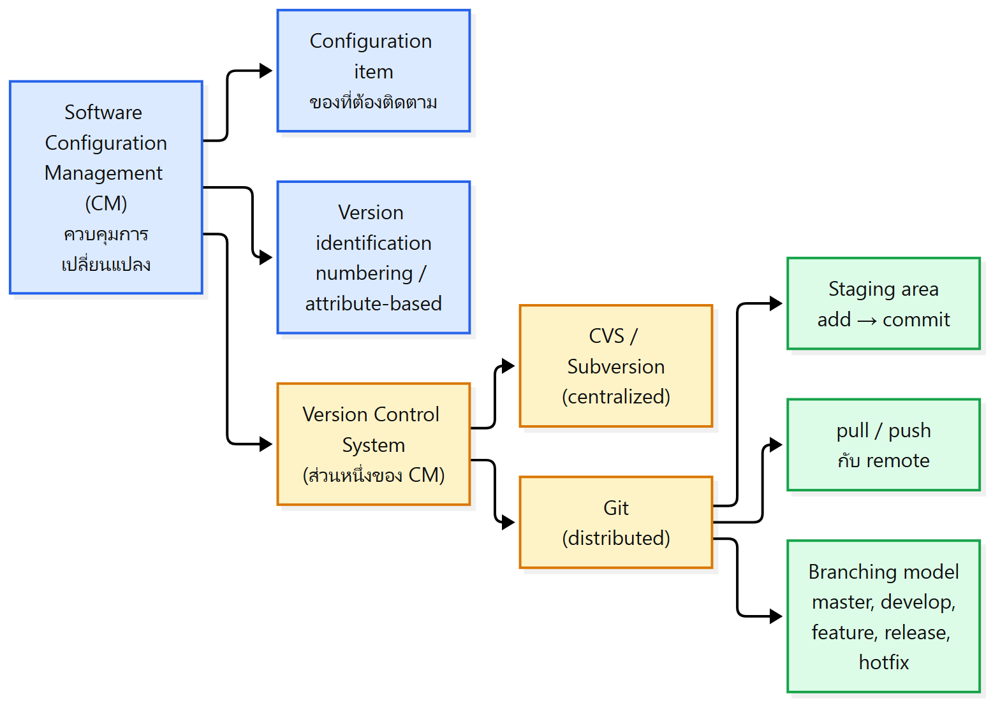
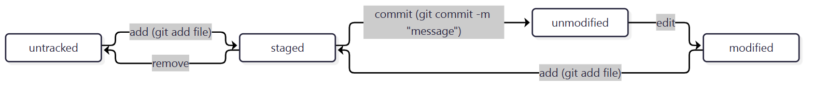
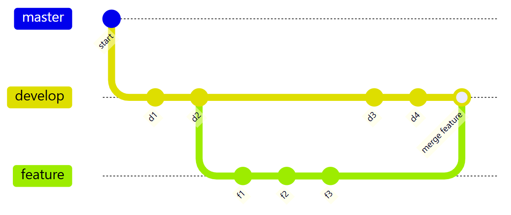
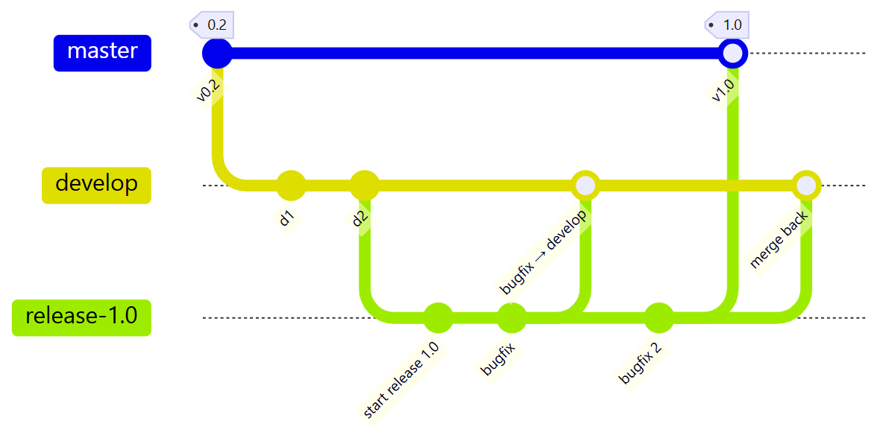
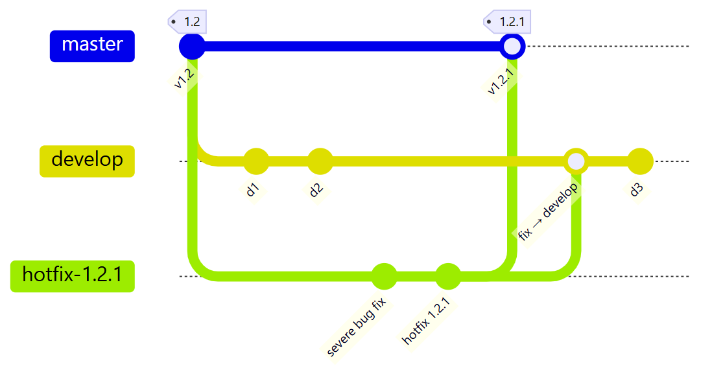

ภาพรวมบทนี้: L10 บอกว่า implementation มีขั้น configuration management บทนี้ลงรายละเอียดเรื่องนั้น: ควบคุมการเปลี่ยนแปลง ของซอฟต์แวร์ และเครื่องมือหลักคือ Version Control System (VCS)
เนื้อหามี 2 ส่วนตาม Topics: (1) Software configuration management – configuration item, version identification (2) Version control – จาก CVS/Subversion สู่ Git: staging area, add/commit/pull/push, branch และ Git branching model (master, develop, feature, release, hotfix)

1. Software Configuration Management (CM) คืออะไร?
แก่นCM = ศาสตร์และเทคนิคในการเริ่ม ประเมิน และควบคุมการเปลี่ยนแปลงของผลิตภัณฑ์ซอฟต์แวร์ ทั้งระหว่างและหลังกระบวนการพัฒนา
- นิยาม: encompasses the disciplines and techniques of initiating, evaluating and controlling change to software products during and after the software engineering process
- มาตรฐาน:
- IEEE 828: Software Configuration Management Plans
- IEEE 1042: Guide to Software Configuration Management
Configuration management process (สไลด์ 5, Elliando Dias 2008): CM เป็นกระบวนการที่เชื่อมกับอีก 2 กลุ่มกระบวนการ
| ทิศทาง | ข้อมูลที่ไหล |
|---|---|
| CM ↔ Project Management Processes (Project Formulation, Project Planning, Project Startup, Project Monitoring & Control, Project Closeout) | รับ Planning Data / ส่ง CM Plan, Status reports; audit results |
| Product Development Processes (Systems Engineering → Requirements Engineering → Design → Implementation → Testing → Product Release → Sustaining Engineering & Maintenance) → CM | ส่ง Work products; change requests เข้า CM |
| CM → Product Development Processes | ส่ง Controlled work products; approved change requests กลับ |
💡 สังเกต: ทุกขั้นของการพัฒนา (ไม่ใช่แค่ implementation) ส่ง work product และ change request ผ่าน CM
2. Configuration item คืออะไร?
แก่นconfiguration item = อะไรก็ตามที่เปลี่ยนแปลงได้และเราต้องการติดตาม/ควบคุม ไม่ใช่แค่โค้ด แต่รวมเอกสาร test และ config ของระบบ/ฮาร์ดแวร์ด้วย
- ซอฟต์แวร์ เอกสาร ฮาร์ดแวร์ หรือ work product ที่เปลี่ยนแปลงได้ = configuration item
- คือ "สิ่งของ" ที่เรา อยากติดตามและควบคุม
- แทบทุกอย่าง เป็น configuration item ได้ ไม่ใช่แค่โค้ด:
- เอกสารทุกประเภทตามการพัฒนา
- code file ทุกชนิด
- drivers for tests
- เอกสาร requirement, analysis, design
- คู่มือผู้ใช้ / คู่มือนักพัฒนา
- system configurations (เช่น เวอร์ชันของ compiler ที่ใช้)
- hardware configuration items (CPU, ความถี่ bus)
3. ระบุเวอร์ชันยังไง? (Version identification)
แก่นต้องมีวิธีระบุเวอร์ชันของ component ที่ไม่กำกวม มี 2 เทคนิค: ใส่เลขเวอร์ชัน (ง่ายแต่ชื่อไม่สื่อความหมาย) และระบุด้วย attribute
| เทคนิค | วิธี | ตัวอย่าง | หมายเหตุ |
|---|---|---|---|
| 1. Version numbering | ตั้งชื่อเรียงต่อกันเป็นเส้นตรง (linear derivation) | V1, V1.1, V1.2, V2.1, V2.2 | ชื่อไม่สื่อความหมาย |
| 2. Attribute-based identification | ผูก attribute หลายตัวกับเวอร์ชัน ใช้ ชุดของ attribute ระบุเวอร์ชัน | Date, Creator, Programming Language, Customer, Status |
4. ทำไมต้องมี Version Control System?
แก่นถ้าไม่มี VCS จะหลงว่าไฟล์ไหนคือล่าสุด VCS เป็นส่วนหนึ่งของ CM มีจุดประสงค์ 3 ข้อ: ย้อนกลับไป configuration เก่าได้ ประสานการเปลี่ยนแปลง และระบุเวอร์ชัน/component
- สไลด์ 9 "Losing track of your changes?" ภาพประกอบ:
- การ์ตูน "FINAL.doc" ที่ชื่อไฟล์ค่อย ๆ กลายเป็น
FINAL_rev.2.doc→ … →FINAL_rev.22.comments49.corrections.10.#@$%WHYDID ICOMETOGRADSCHOOL????.doc - หน้าต่างไฟล์ที่มี
final-project.doc,final-project-v2.doc,final-project-v2-update.doc,final-project-v2-FINAL.doc,final-project-v2-FINALFINAL.doc - ภาพจรวดระเบิดจาก NASA
- การ์ตูน "FINAL.doc" ที่ชื่อไฟล์ค่อย ๆ กลายเป็น
- VCS เป็น component หนึ่งใน configuration management
- Purposes:
- Restoring previous configurations – ย้อนกลับไปสถานะเก่าได้
- Coordinating changes – ประสานการแก้ไขของหลายคน
- Identifying versions and components – รู้ว่าเวอร์ชันไหนประกอบด้วยอะไร
- สไลด์ 11: VCS บันทึกโปรเจกต์ตามเวลา: v-0.1 (24 Feb'17) สร้างไฟล์ใหม่ → v-0.2 (20 Mar'17) สร้างไฟล์ใหม่ + แก้ไฟล์เดิม → v-0.3 (07 Apr'17) สร้างและแก้อีกหลายไฟล์ VCS ติดตามสถานะ Created / Modified ของแต่ละเวอร์ชัน
5. CVS, Subversion, Git ต่างกันยังไง?
แก่นCVS และ Subversion มี repository กลางที่เดียว ทุกคน checkout/update จากที่นั่นและ checkin/commit กลับ ส่วน Git ทุกคนมี repository ของตัวเอง (distributed) มี staging area แล้ว push/pull กับ repository อื่น
| CVS (สไลด์ 12) | Subversion (สไลด์ 13) | Git (สไลด์ 14) | |
|---|---|---|---|
| Repository | ที่เดียว (กลาง) | ที่เดียว (กลาง) | หลายที่ (distributed) ทุกคนมี repository ในเครื่อง |
| เอาโค้ดลงเครื่อง | checkout | update | pull จาก repository อื่น |
| ส่งโค้ดกลับ | checkin | commit | commit เข้า repository ในเครื่อง แล้ว push ไป repository อื่น |
| ในเครื่องผู้ใช้ | ไฟล์ A, B, C | ไฟล์ A, B, C + โฟลเดอร์ .svn (สำเนา A, B, C) |
ไฟล์ A, B, C + staging + Repository ของตัวเอง |
(ทุกรูปใช้ตัวอย่างผู้ใช้ Alice และ Bob กับไฟล์ A, B, C)
6. Git และ distributed version control
แก่นGit = distributed VCS ฟรีและ open-source ทำงานเร็ว เกือบทุกอย่างอยู่ในเครื่อง ทำงาน offline ได้ และทุก clone มีประวัติครบจึงเป็น backup ไปในตัว
Git (git-scm.com): free and open-source distributed version control system designed to handle everything from small to very large projects with speed and efficiency
- เรียนรู้ง่าย
- tiny footprint และเร็วมาก
- เหนือกว่า SCM tool อื่นอย่าง Subversion และ CVS
- local branching ราคาถูก, มี staging area สะดวก และรองรับหลาย workflow
Distributed Version Control:
- Almost everything is local – เกือบทุกอย่างอยู่ในเครื่อง
- Almost every operation is fast
- Almost every cloned repository is a backup
- Almost every operation works offline
- Almost all repositories have the full history
7. Staging area และ file status lifecycle
แก่นstaging area (index) คือที่พักการเปลี่ยนแปลงที่จะถูก commit เป็นจุดเด่นของ Git ไฟล์จะวนผ่านสถานะ untracked → staged → unmodified → modified → staged
Staging area (index):
- ต่างจาก VCS อื่น Git มีแนวคิด staging area
- คือ การเปลี่ยนแปลงที่จะถูก commit
- ใช้ เตรียมตัวก่อน commit ได้
File status lifecycle + คำสั่ง Git:

| จาก | การกระทำ | ไป |
|---|---|---|
| untracked | add (git add <file>) |
staged |
| staged | remove | untracked |
| staged | commit (git commit -m "message") |
unmodified |
| unmodified | edit | modified |
| modified | add (git add <file>) |
staged |
⚠️ ในรูปสไลด์ 18–19 สะกดว่า "modifed" (ที่ถูกคือ modified)
8. Add, Commit, Pull, Push ทำอะไร?
แก่นadd = working directory → staging, commit = staging → local repo, pull = remote → local (fetch + merge), push = local commits → remote
| คำสั่ง | จาก → ไป | รายละเอียดตามสไลด์ |
|---|---|---|
| Add | working directory → staging area | เลือกว่าการเปลี่ยนแปลงไหนจะอยู่ใน commit ถัดไป และ review ก่อน commit ได้ |
| Commit | staging area → local repository | สร้าง เวอร์ชันใหม่ (commit) ของโปรเจกต์ พร้อม commit message อธิบายการเปลี่ยนแปลง |
| Pull | remote repository → local repository | fetch การเปลี่ยนแปลงจาก remote แล้ว merge เข้า branch ปัจจุบัน ปกติ merge อัตโนมัติ ถ้ามี conflict ก็จัดการได้ไม่ยาก |
| Push | local commits → remote repository | ทำให้คนอื่นเห็นการเปลี่ยนแปลง อาจถูก reject ถ้า remote มีการเปลี่ยนแปลงที่ local ยังไม่มี |
- นอกเหนือจาก push/pull: Git สร้าง patch และ นำ patch มารวม ได้
💡 จำทิศ: pull = ดึงเข้ามา (remote → local) | push = ดันออกไป (local → remote)
⚠️ push ถูก reject เมื่อ remote มีของใหม่ที่เรายังไม่มี
9. Decentralized but Centralized
แก่นGit เป็น distributed ก็จริง แต่ในทางปฏิบัติมักมี repository กลาง (origin) ที่ทุกคน push/pull และทีมย่อยยัง fetch กันเองได้
- รูปในสไลด์: origin อยู่ตรงกลาง → alice, bob, clair, david ต่างก็ push/pull กับ origin
- ระหว่างคู่ alice–bob, alice–david และ david–clair ยังมี subteam fetches ดึงงานกันเองโดยไม่ผ่าน origin
10. Branch: ใช้เมื่อไหร่ และควรระวังอะไร?
แก่นbranch หลักคือ master ซึ่งต้อง deploy ได้และเสถียรเสมอ ห้าม push สิ่งที่ยังไม่ test ขึ้น master ส่วนงานใหม่ แก้ bug หรือทดลอง ให้แตก branch แยก
10.1 Master branch
- Git มี default branch ชื่อ "master"
- master deploy ได้ = production code พร้อมปล่อยใช้จริง
- master ต้อง เสถียร (stable)
- เป็น social contract ของ open-source: ห้าม push สิ่งที่ยังไม่ test หรือทำให้ build พังขึ้น master เด็ดขาด
- GitHub ทำงานได้เพราะ ทำงานจาก master ได้อย่างปลอดภัยเสมอ
10.2 เมื่อไหร่ควรสร้าง branch ใหม่?
- เพิ่ม feature ใหม่
- ทำ release ใหม่ ของซอฟต์แวร์
- ทดลอง การเปลี่ยนแปลงใหม่
- แก้ bug
10.3 Branching and merging
| ข้อดี | ข้อควรระวัง |
|---|---|
| branch และ merge ใน Git ง่าย | branch ทำให้เกิด conflict ตอน merge ได้ |
| branch มักเป็น ของชั่วคราว | แก้ conflict โดยไม่มี tool ช่วยนั้นลำบาก |
| สนับสนุนให้แตก branch | ควรใช้ workflow ที่กำหนดไว้ชัดเจน |
| merge ส่วนใหญ่ อัตโนมัติ |
⚠️ สไลด์ 27 เขียนว่า "Branches of often temporary" (น่าจะหมายถึง "are often temporary")
11. Git Branching Model
แก่นมี main branches 2 ตัวที่อยู่ตลอด (master = พร้อม production, develop = รวมงานล่าสุดสำหรับ release ถัดไป) และ supporting branches 3 แบบ (feature, release, hotfix) ที่สร้างตามงาน
11.1 Main branches
| Branch | สะท้อนสถานะ |
|---|---|
| master | โค้ด production-ready เสมอ |
| develop | โค้ดที่มี การเปลี่ยนแปลงล่าสุดสำหรับ release ถัดไป |
- รูปในสไลด์: develop แตกจาก master ตอน "Initial production version" แล้วมี commit สะสม ("Work in progress on 'next release'") จากนั้น merge กลับเข้า master เป็น "Next production release" เป็นระยะ
⚠️ สไลด์ 28 เขียนว่า "The main branches alwasy include" (พิมพ์ผิด ที่ถูกคือ always)
11.2 Supporting branches
| Branch | ใช้ทำอะไร | แตกจาก → merge กลับ (ตามรูปในสไลด์) |
|---|---|---|
| Feature (หรือ topic branch) | พัฒนา feature ใหม่ สำหรับ release ถัดไปหรือ release ในอนาคตไกล | develop → develop |
| Release | เตรียม production release ใหม่ ทำให้ develop ว่างไว้รับ feature ของ release ใหญ่ถัดไป | develop → master (ติด tag เช่น 1.0) และ develop |
| Hotfix | ต้อง แก้ทันที เมื่อ production version ที่ใช้งานจริงมีปัญหา (critical bug) | tag บน master ที่เป็น production version → master (tag ใหม่) และ develop |
Feature branch (สไลด์ 30)

Release branch (สไลด์ 31) – ระหว่างอยู่บน release branch ทำได้ แค่แก้ bug ("Only bugfixes!") และ bugfix จาก release branch merge กลับเข้า develop ได้ต่อเนื่อง

Hotfix branch (สไลด์ 32) – ตัวอย่างในสไลด์: แตกจาก tag 1.2 บน master แก้ "Severe bug fixed for production: hotfix 1.2.1" แล้ว merge เข้า master เป็น tag 1.2.1 และ merge เข้า develop ด้วย

11.3 The Whole Picture
รูปรวม 5 branch: feature branches – develop – release branches – hotfixes – master (เวลาไหลจากบนลงล่าง)
- master มี tag 0.1 → 0.2 → 1.0
- hotfix 0.2 แก้ "Severe bug fixed for production" แล้ว merge เข้า master (tag 0.2) และ "Incorporate bugfix in develop"
- feature branches: "Feature for future release" และ "Major feature for next release" merge เข้า develop
- release branch 1.0: "Start of release branch for 1.0" → "Only bugfixes!" → "Bugfixes from rel. branch may be continuously merged back into develop" → merge เข้า master (tag 1.0)
- หลังเริ่ม release branch 1.0: "From this point on, 'next release' means the release after 1.0"
💡 จำง่าย: feature วนอยู่กับ develop | release = develop → master | hotfix = master → master (และส่งต่อให้ develop ด้วยเสมอ)
คำศัพท์สำคัญ
| คำศัพท์ | ความหมาย | จำง่าย ๆ ว่า |
|---|---|---|
| Software Configuration Management (CM) | initiating, evaluating, controlling change ระหว่างและหลังการพัฒนา | คุมการเปลี่ยนแปลง |
| IEEE 828 / IEEE 1042 | มาตรฐาน SCM Plans / Guide to SCM | 828 = Plan |
| Configuration item | สิ่งที่เปลี่ยนแปลงได้และต้องติดตาม | เกือบทุกอย่าง |
| Version numbering | V1, V1.1, … (ชื่อไม่สื่อความหมาย) | |
| Attribute-based identification | ระบุเวอร์ชันด้วยชุด attribute (Date, Creator, …) | |
| VCS | ระบบควบคุมเวอร์ชัน ส่วนหนึ่งของ CM | |
| Repository | ที่เก็บประวัติเวอร์ชัน | |
| Distributed VCS | ทุกคนมี repository ครบประวัติในเครื่อง | Git |
| Staging area (index) | ที่พักการเปลี่ยนแปลงที่จะ commit | ตะกร้าก่อนจ่ายเงิน |
| Untracked / Staged / Unmodified / Modified | สถานะของไฟล์ใน Git | |
| Commit | บันทึก staged changes เป็นเวอร์ชันใหม่ใน local repo | |
| Pull | fetch + merge จาก remote | ดึงเข้า |
| Push | ส่ง local commits ไป remote | ดันออก |
| Conflict | merge แล้วการแก้ไขชนกัน | |
| Patch | ไฟล์การเปลี่ยนแปลงที่ Git สร้าง/รวมได้ | |
| origin | repository กลางในรูป "Decentralized but Centralized" | |
| master | branch production-ready, ต้อง stable | |
| develop | branch รวมงานล่าสุดสำหรับ release ถัดไป | |
| Feature (topic) branch | พัฒนา feature ใหม่ | |
| Release branch | เตรียม production release (แก้แค่ bug) | |
| Hotfix branch | แก้ด่วน production จาก tag บน master | |
| Tag | ป้ายเวอร์ชันบน master เช่น 1.0, 1.2.1 |
สรุปท้ายบท / จุดที่มักออกสอบ
- ⭐ นิยาม CM: initiating, evaluating, controlling change during and after SE process + มาตรฐาน IEEE 828, IEEE 1042
- ⭐ Configuration item มีมากกว่าโค้ด: เอกสาร, test drivers, manual, compiler version, hardware config
- ⭐ Version identification 2 แบบ: numbering (ชื่อไม่สื่อความหมาย) vs attribute-based
- ⭐ VCS purposes 3 ข้อ: restore, coordinate, identify
- ⭐ CVS (checkout/checkin) และ SVN (update/commit) = repo กลาง vs Git = distributed
- ⭐ Distributed 5 ข้อ: local, fast, clone = backup, offline, full history
- ⭐ File status lifecycle และคำสั่ง
git add <file>,git commit -m "message" - ⭐ add / commit / pull / push ทำอะไร จากไหนไปไหน (push ถูก reject ได้)
- ⭐ ห้าม push สิ่งที่ยังไม่ test หรือทำ build พังขึ้น master
- ⭐ เมื่อไหร่ควร branch 4 กรณี: feature, release, experiment, bug fix
- ⭐ Branching model: main (master, develop) + supporting (feature, release, hotfix)
คู่ที่มักสับสน
| A | B | ต่างกันตรงไหน |
|---|---|---|
| CM | VCS | กระบวนการควบคุมการเปลี่ยนแปลงทั้งหมด vs เครื่องมือที่เป็นส่วนหนึ่งของ CM |
| Version numbering | Attribute-based | เลขเรียงต่อกัน (ไม่สื่อความหมาย) vs ชุด attribute |
| Centralized (CVS, SVN) | Distributed (Git) | repo กลางที่เดียว vs ทุกคนมี repo ครบประวัติ |
| CVS checkout/checkin | SVN update/commit | คำเรียกของแต่ละระบบ (ทั้งคู่คุยกับ repo กลาง) |
| Add | Commit | working dir → staging vs staging → local repo |
| Commit | Push | บันทึกใน local vs ส่งไป remote |
| Pull | Push | remote → local (fetch + merge) vs local → remote |
| Untracked | Modified | Git ยังไม่เคยติดตาม vs เคย commit แล้วถูกแก้ |
| master | develop | production-ready vs งานล่าสุดสำหรับ release ถัดไป |
| Release branch | Hotfix branch | แตกจาก develop เตรียม release vs แตกจาก tag บน master แก้ด่วน |
| Feature branch | Release branch | merge กลับ develop เท่านั้น vs merge เข้า master + develop |